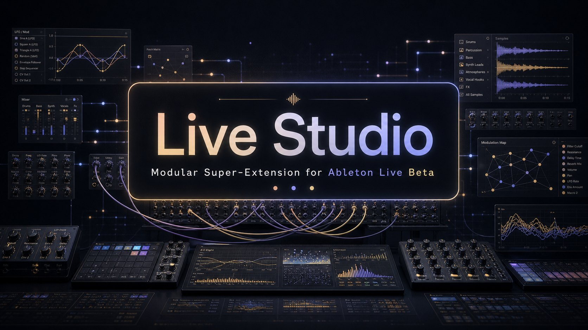

144 modules and 414 real tools — generative instruments, mixing analysis, an AI copilot with plan mode, project snapshots and a live-updating dashboard. All in a single tabbed webview.
414/414 tools
No simulated output, no placeholder data, no demo mode — each of the 414 tools mutates or reads the real Live Set.
Notes written, faders moved, tracks created, files rendered to disk — every tool acts on the actual Live Set, not a simulation of it.
Every destructive edit from every module is recorded and reversible — undo the last change from anywhere, or target a specific clip/track/device.
A handful of tools touch things the Ableton Extensions SDK (beta) has no API for yet — audio routing, transport control. Those are labeled advisory and say exactly what they can't do.
What's inside
From generative composition to mix QA — organized in modules, searchable in a command palette, reachable by the AI copilot.
Drive any of the 414 tools by natural language (OpenRouter, OpenAI, Gemini, NVIDIA NIM, OpenCode Zen). "Plan first" mode proposes a reviewable step-by-step plan — nothing runs until you apply it.
BPM, key, tracks, clips, scenes and snapshots at a glance. The server diffs the Set every 1.5s and pushes SSE events — panels like the Mix Console re-render themselves as Live changes.
Piano-roll notation, step sequencer, mixer with dB faders, clip graph, EQ curves, drum maps, session health, gain staging… loaded lazily so the UI opens instantly.
808s, supersaws, Reese bass, Karplus-Strong strings, FM bells, choirs, risers, glitch FX… synthesized inside the extension (no samples) and imported as real clips.
Renders your stems and FFT-analyzes them in-host: frequency masking matrix, auto gain-staging by measured RMS, spectrum matching, key detection, audio→MIDI transcription.
Every destructive edit from every module is recorded and undoable — globally, or per clip/track/device. Redo re-applies for real.
Serialize the whole Set to disk, diff two checkpoints GitHub-style, and restore — every restored change is itself undoable.
Pin your modules, jump back to recent ones, filter the sidebar by Mixing / Sound design / Performance. Persisted server-side across sessions.
The whole UI — including all 414 tool descriptions — auto-detects your system language, with a manual toggle. One codebase, one dictionary, zero duplicated files.
See it working
Recorded against the real server — no mockups: the live dashboard updating its BPM on its own, a fader dragged in the Mix Console, the ⌘K palette, drum generation, a project snapshot and the AI copilot.
Natural language, real actions
"Create a MIDI track named Bass, generate a pop progression in C minor, then a techno beat at 124 BPM" — the copilot discovers the right tools and runs them. Your API key never leaves the local server's memory.
The model doesn't see 414 tool schemas at once — it searches with find_tools, browses with list_modules and executes with run_tool. Full reach, tiny payloads.
In plan mode the model can only explore — it returns a step-by-step plan you review and apply with one click. Hallucinated tools are flagged and skipped, never executed.
Every applied step goes through the normal tool path, so it lands in Edit History — undo any step, or all of them.
Get started
No build step, no dependencies — one file.
Grab live-studio.ablx from the latest release.
Double-click the .ablx (or drag it into Live). Ableton Live 12 with the Extensions beta enabled installs it as an extension.
Launch it from Live's extensions — the dashboard opens with your project at a glance, in English or Spanish automatically.
Requires Ableton Live 12 with the Extensions SDK beta. Free & open source, GPL-3.0-or-later.
For developers
# scaffold a complete module: tools + rich panel + registry + tests npm run new:module -- swing "Swing Doctor" 🎷 # the suite must stay green — 325 end-to-end smoke tests npm run typecheck && npm run test # regenerate the searchable catalog from the real registry npm run gen:catalog # build + package the installable .ablx npm run package
Every module implements the same minimal contract — a tool registry with definitions and an execute function — and the MasterRegistry absorbs it with namespacing. Adding a module to the app is literally one line.
Rich panels load lazily and register themselves; no HTML edits needed. The catalog and the AI copilot pick up new tools automatically, because both read the same live registry.